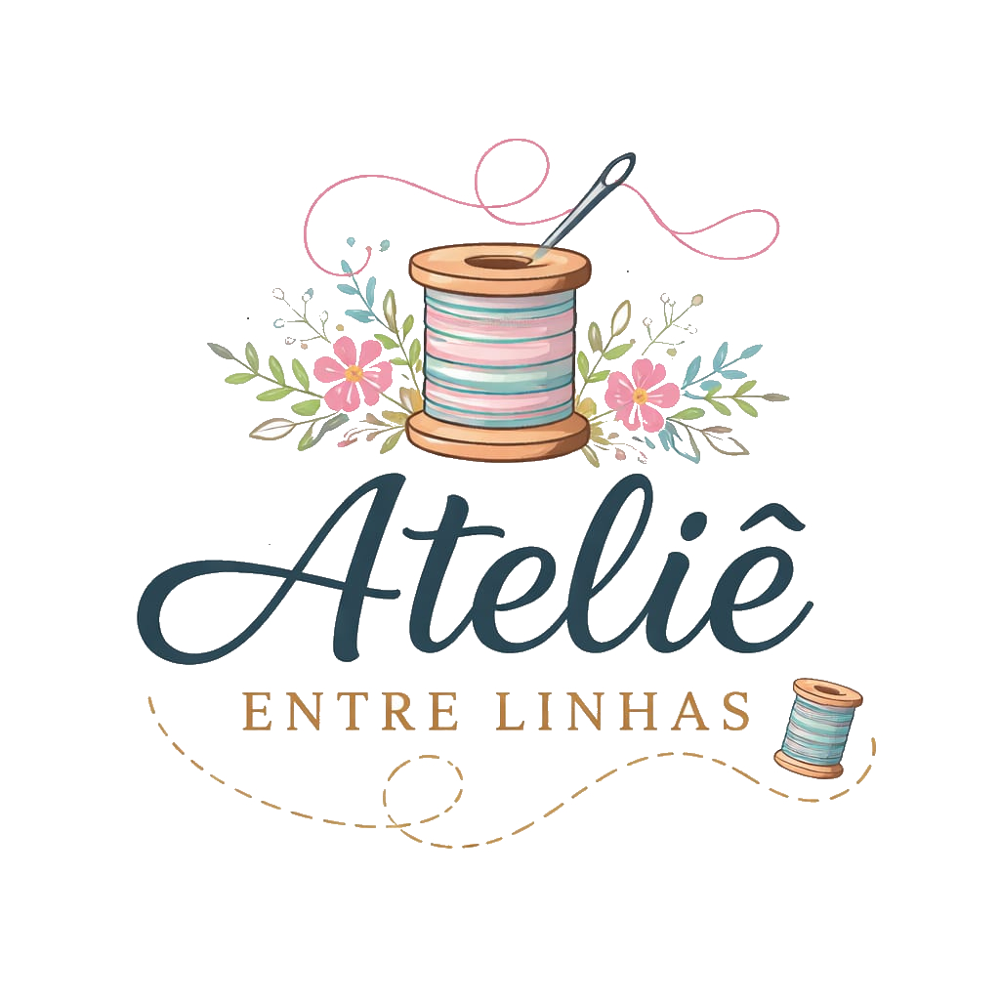
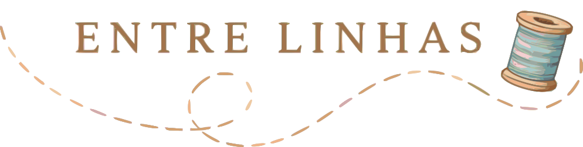
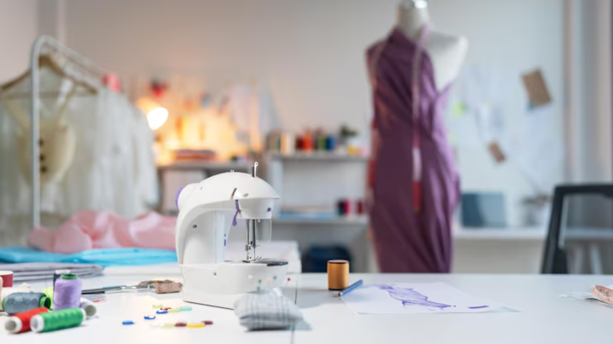

Sob medida
Modelagem pensada para vestir bem, com prova e acabamento atento.



Ateliê artesanal em costura feminina
Criação, ajustes e reformas para roupas que acompanham seu corpo, sua rotina e os momentos importantes da sua vida.
Modelagem pensada para vestir bem, com prova e acabamento atento.
Barras, cintura, caimento, reformas e pequenos reparos em peças especiais.
Conjuntos e detalhes para eventos, trabalho e uso cotidiano.
Sobre o ateliê
Entre Linhas é um espaço de criação manual para quem procura roupas com bom caimento, acabamento limpo e conversa cuidadosa antes da tesoura tocar o tecido.
Cada peça é tratada com atenção: escolha de tecido, proporção, conforto, prova e pequenos ajustes que fazem diferença no resultado final.
Portfólio
Uma seleção de peças, ajustes e detalhes feitos com atenção ao caimento, ao tecido e ao acabamento.
Contato
Envie uma mensagem contando o que você precisa: ajuste, reforma ou prazo para uma ocasião especial.
Atendimento no Brasil, com agendamento prévio.